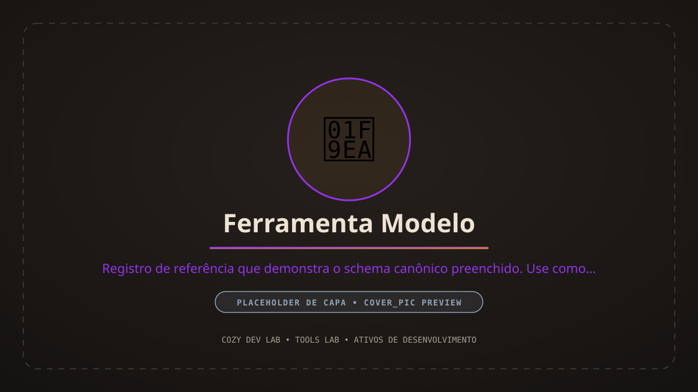
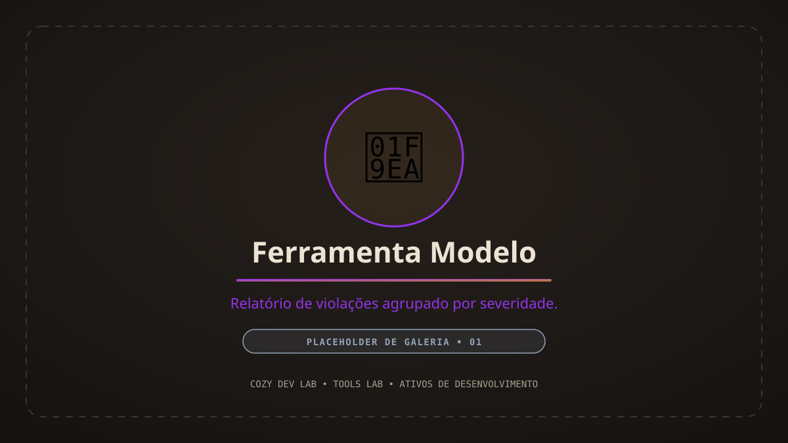

Ferramenta Modelo
Registro de referência que demonstra o schema canônico preenchido. Use como modelo ao documentar uma nova ferramenta do Tools Lab.

💡 O Desafio & Contexto
Gargalo Operacional
Abordagem Técnica & Solução
⏱️ Contexto de Workflow & Produtividade
Público-Alvo
Impacto & Tempo Economizado
~40 min por iteração de build
18
1.2 s
✨ Recursos Principais
🔄 Fluxo do Pipeline (I/O)
Entradas (Inputs)
Lógica de Processamento
Saídas (Outputs)
🖼️ Galeria do Projeto
Registros visuais, interfaces e capturas de desenvolvimento.
🔧 Arquitetura Técnica & Ergonomia
Estruturas de Dados
Integrações com Engine / Editor
Decisões Técnicas
🛡️ Validação, Testes & Tratamento de Erros
Cobertura de Testes
86%
Validação & Não-Destrutividade
📊 Resultados & Limitações Observadas
Limitações Conhecidas
Próximos Passos